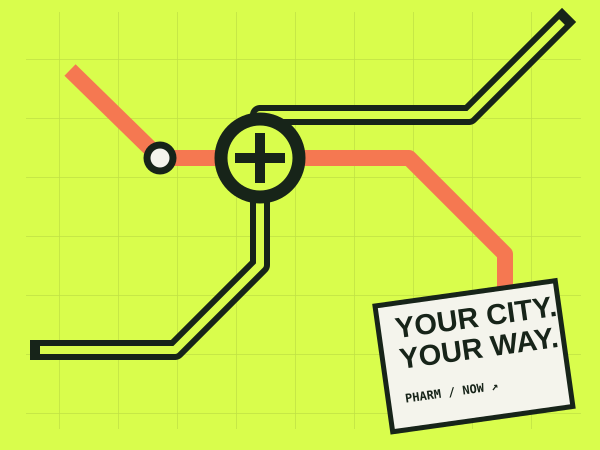

ABOUT / PHARM NOW우리 동네 약국,
우리 동네 약국,
더 잘 찾을 수 있게.
약국오늘은 공공데이터를 기반으로 위치와 운영시간을 정리하고 약국 방문에 필요한 안내를 연결하는 민간 정보 서비스입니다.
약국 찾아보기
OUR PURPOSE더 빨리 찾고,
더 빨리 찾고,
덜 헤매도록.
우리의 역할은 사용자의 의료적 판단을 대신하는 것이 아닙니다. 위치·시간표·연락 수단을 구조화하고, 정보의 정확도와 한계를 구분해 전달하는 것입니다.
01 / FIND
02 / VERIFY
03 / NAVIGATE
HOW THE INFORMATION WORKS정보가 만들어지는
정보가 만들어지는
순서.
01 / ORIGINAL DATA공개 자료
확보확인 가능한 자료만 사용 ↗
확보확인 가능한 자료만 사용 ↗
02 / NORMALIZATION읽기 쉬운
정보 정리필드·시간표 구조화 ↗
정보 정리필드·시간표 구조화 ↗
03 / DISCLOSURE한계와 출처
함께 표시전화 확인·정정 경로 ↗
함께 표시전화 확인·정정 경로 ↗
DATA & TRUST POLICY신뢰를 위한
신뢰를 위한
운영 약속.
정보의 출처실제 데이터셋별 공식 원문 확인
운영 시간시간표 추산과 현장 확인 구분
의료 정보진단·처방으로 오해될 표현 제한
자동화 콘텐츠AI 사용 사실 및 실제 검토 여부 구분
오류 정정문의 및 정정 요청 경로 제공